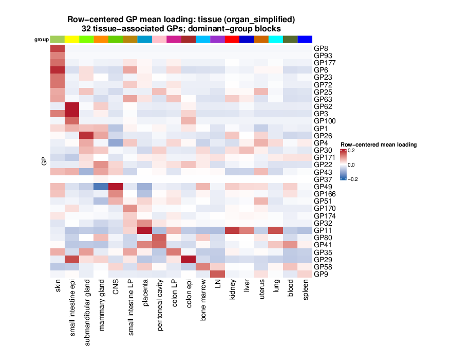
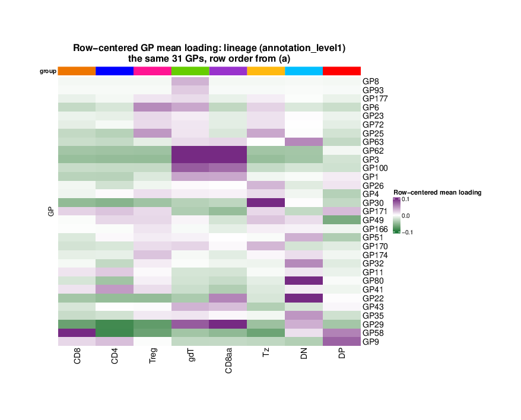

Last updated: 2026-09-09
Checks: 7 0
Knit directory:
immgenT-GP-analysis/analysis/
This reproducible R Markdown analysis was created with workflowr (version 1.7.2). The Checks tab describes the reproducibility checks that were applied when the results were created. The Past versions tab lists the development history.
Great! Since the R Markdown file has been committed to the Git repository, you know the exact version of the code that produced these results.
Great job! The global environment was empty. Objects defined in the global environment can affect the analysis in your R Markdown file in unknown ways. For reproduciblity it’s best to always run the code in an empty environment.
The command set.seed(1) was run prior to running the
code in the R Markdown file. Setting a seed ensures that any results
that rely on randomness, e.g. subsampling or permutations, are
reproducible.
Great job! Recording the operating system, R version, and package versions is critical for reproducibility.
Nice! There were no cached chunks for this analysis, so you can be confident that you successfully produced the results during this run.
Great job! Using relative paths to the files within your workflowr project makes it easier to run your code on other machines.
Great! You are using Git for version control. Tracking code development and connecting the code version to the results is critical for reproducibility.
The results in this page were generated with repository version 0e84840. See the Past versions tab to see a history of the changes made to the R Markdown and HTML files.
Note that you need to be careful to ensure that all relevant files for
the analysis have been committed to Git prior to generating the results
(you can use wflow_publish or
wflow_git_commit). workflowr only checks the R Markdown
file, but you know if there are other scripts or data files that it
depends on. Below is the status of the Git repository when the results
were generated:
Ignored files:
Ignored: .DS_Store
Ignored: .claude/
Ignored: analysis/.DS_Store
Ignored: analysis/.Rhistory
Ignored: analysis/assets/.DS_Store
Ignored: captions/
Ignored: code/.DS_Store
Ignored: code/other/topic_flashier_20250212.R
Ignored: code/other/topic_wrapper_20250215_alldata_backfit.sh
Ignored: data
Ignored: experiments/
Ignored: figures/.DS_Store
Ignored: figures/Previous/.DS_Store
Ignored: figures/Previous/bits/.DS_Store
Ignored: figures/Previous/bits/Figure 1/.DS_Store
Ignored: figures/Previous/bits/Figure 2/.DS_Store
Ignored: figures/Previous/bits/Figure 3/.DS_Store
Ignored: figures/Previous/bits/Figure 4/.DS_Store
Ignored: figures/Previous/bits/Figure 6/.DS_Store
Ignored: figures/Previous/bits/Figure 7/.DS_Store
Ignored: figures/Previous/bits/Figure S1/.DS_Store
Ignored: figures/Previous/bits/Figure S2/.DS_Store
Ignored: figures/Previous/bits/Figure S3/.DS_Store
Ignored: figures/Previous/bits/Figure S6/.DS_Store
Ignored: figures/Previous/bits/Figure S7/.DS_Store
Ignored: figures/final-selected/.DS_Store
Ignored: figures/final-selected/Figure 1/.DS_Store
Ignored: figures/final-selected/Figure 2/.DS_Store
Ignored: figures/final-selected/Figure 4/.DS_Store
Ignored: figures/final-selected/Figure S1/.DS_Store
Ignored: figures/templates_20260729/
Ignored: internal/
Ignored: log/
Ignored: output/.DS_Store
Ignored: output/Figure2/
Ignored: output/Figure7b/7b_cell_metadata.csv.gz
Ignored: plan/
Ignored: tables/
Ignored: tmp/
Note that any generated files, e.g. HTML, png, CSS, etc., are not included in this status report because it is ok for generated content to have uncommitted changes.
These are the previous versions of the repository in which changes were
made to the R Markdown (analysis/FigureS5.Rmd) and HTML
(docs/FigureS5.html) files. If you’ve configured a remote
Git repository (see ?wflow_git_remote), click on the
hyperlinks in the table below to view the files as they were in that
past version.
| File | Version | Author | Date | Message |
|---|---|---|---|---|
| Rmd | c233cd8 | Ziang Zhang | 2026-09-09 | Extended Data reorganisation: split the tissue/cluster figure, renumber 3-8 |
| html | 1e88d7e | Ziang Zhang | 2026-09-04 | Build site: published captions and titles across all 24 pages |
| Rmd | 0267e5b | Ziang Zhang | 2026-09-04 | Captions from the published manuscript; trim editor notes off the page code |
| html | 5d3b86c | Ziang Zhang | 2026-09-03 | Build site: Extended Data Figure 5 page rebuilt after the recolouring |
| Rmd | 2101847 | Ziang Zhang | 2026-09-03 | Extended Data Figure 5: colour each lineage row on its own |
| html | 19c977f | Ziang Zhang | 2026-09-02 | Build site: Extended Data 5-7 renumbered, Figure S5 page rebuilt |
| Rmd | 1e5721a | Ziang Zhang | 2026-09-02 | Extended Data 5-7 renumbered, and Figure S5 assembled as one stacked figure |
| html | ae03072 | Ziang Zhang | 2026-08-19 | Build site: six pages rebuilt after the prose cleanup |
| Rmd | adc2327 | Ziang Zhang | 2026-08-19 | Site prose: finish taking internal notes off the pages |
| html | eeca07b | Ziang Zhang | 2026-08-05 | Keep pre-refactor provenance in panel comments off the published pages |
| Rmd | 5651d0e | Ziang Zhang | 2026-08-05 | Extended Data tables: reorder to six, rebuild Table 1, drop internal notes |
| html | cbcec52 | Ziang Zhang | 2026-07-30 | Build site: Extended Data Figure naming |
| Rmd | 66aa029 | Ziang Zhang | 2026-07-30 | Name the Extended Data figures as published on the site |
| html | ac650a0 | Ziang Zhang | 2026-07-30 | Build site: Figure S5 (ex-S6a) and Figure S6 as a-f |
| Rmd | c9b020f | Ziang Zhang | 2026-07-30 | Split Figure S6’s protein-program heatmap out as Figure S5 |
| html | d538aa2 | Ziang Zhang | 2026-07-28 | Build site: reordered Figures 6 / S6 / S3 and the new Figure 7b page |
| Rmd | 4c07670 | Ziang Zhang | 2026-07-28 | Reorder Figures 6, S6 and S3; make the ex-S5 figure Figure 7b |
| html | 029b0ae | Ziang Zhang | 2026-07-28 | Build site. |
| Rmd | 0f5b5da | Ziang Zhang | 2026-07-28 | Align all figure captions with captions_20260728_final.docx |
| html | 3fc3789 | Ziang Zhang | 2026-07-27 | Republish all 24 pages |
| html | 1390a03 | Ziang Zhang | 2026-07-27 | Republish all 24 pages |
| html | adaef21 | Ziang Zhang | 2026-07-27 | Build site: panel fixes and PDF-derived assets |
| html | 5b19858 | Ziang Zhang | 2026-07-27 | Build site. |
| Rmd | ffe285c | Ziang Zhang | 2026-07-27 | Reorganize figures/ and untrack local-only exploration notes |
| html | f7d90e7 | Ziang Zhang | 2026-07-26 | Build site. |
| Rmd | b0b2b2f | Ziang Zhang | 2026-07-26 | Tidy Figure S5 page: name the S5a/S5b/colorbar panels |
| html | fe93d0d | Ziang Zhang | 2026-07-23 | Build site. |
| Rmd | 61de7cb | Ziang Zhang | 2026-07-23 | Reflect single-matching pipeline on the Figure S5 page |
| html | 9862b6d | Ziang Zhang | 2026-07-23 | Build site. |
| Rmd | 98d2924 | Ziang Zhang | 2026-07-23 | Reword Figure S5 page for a publication audience |
| html | 7ddbdb4 | Ziang Zhang | 2026-07-23 | Build site. |
| Rmd | b138063 | Ziang Zhang | 2026-07-23 | Reformat Figure S5 page: lead with the figure, concise methods, link |
| html | 9398c72 | Ziang Zhang | 2026-07-23 | Publish Figure S5 workflowr page |
| Rmd | b9f4f58 | Ziang Zhang | 2026-07-23 | Add Figure S5: EBMF vs matched-RQVI level2-cluster comparison |
Both panels are produced by script/FigureS5.R.
They show the same 31 GPs – the programs active across tissues – first
across the 18 tissues and then across the 8 T cell lineages, so that a
program’s tissue distribution can be read against its lineage
distribution on the same rows. The analysis uses healthy non-thymocyte
cells (condition_broad == "healthy" and
annotation_level1 != "thymocyte"). For each GP, its mean
loading across the groups shown is subtracted from every group mean, so
a row says where a program is more or less active than its own average
rather than how large its loading is. It is the tissue counterpart of Extended Data Figure 3, which shows all 200 GPs
across the level-2 clusters, and it puts the 31 programs behind Figure 5’s AUC analysis on a single pair of
axes.
A GP is taken to be active across tissues when its raw (uncentered) mean loading reaches 0.1 in at least one of the 18 tissues; 31 of the 200 GPs pass. This is a threshold on activity, not on differential activity – the panels then show how that activity is distributed. The expected set is written out in the script, so a change in the loadings, the cell filter or the cutoff fails the run rather than quietly redrawing a different figure:
# Figure S5. The tissue-associated GPs, across tissues and across lineages.
#
# Panels produced (see analysis/FigureS5.Rmd for the caption text):
# s5a Row-centered mean GP activity across the 18 tissues, restricted to the
# 31 GPs that are active across tissues. Blue-white-red scale.
# s5b The same 31 GPs in the same row order, but across the 8 T cell
# lineages. Purple-white-green scale, so the two halves of the figure
# cannot be mistaken for each other.
#
#
# "Active across tissues" is the selection the manuscript's "31 programs active
# across tissues" refers to: a GP is kept when its *raw* (uncentered) mean
# loading reaches 0.1 in at least one of the 18 tissues. That is a threshold on
# activity, not on differential activity -- the panels then show, per GP, how
# that activity is distributed, by subtracting the GP's mean across the groups
# shown from every group mean. Each panel's centered color scale is fixed:
# [-0.2, 0.2] for (a), matching the retired 200-GP tissue heatmap it comes from,
# and the tighter [-0.1, 0.1] for (b), because spreading a program over eight
# lineages instead of eighteen tissues gives much smaller deviations and (a)'s
# scale renders the lineage panel almost blank. Values outside each range
# saturate at the endpoint colors: 0.9% of (a)'s cells and 3.6% of (b)'s.
#
# Required inputs (data/) -- see code/README.md's "Data provenance" table
# for the full picture:
# L_pm_filtered.rds [code/pipeline/01b_filter_cells.R]
# igt1_96_..._ADTonly.Rds [primary input Seurat object]
suppressPackageStartupMessages({
library(ComplexHeatmap)
library(circlize)
library(grid)
library(ZemmourLib)
})
if (!file.exists("code/R/setup_data.R")) {
stop("Run this script from the immgenT-GP-analysis repository root.")
}
source("code/R/setup_data.R")
source("code/R/centered_mean_heatmap.R")
figure_path <- "figures/final-selected/Figure S5"
dir.create(figure_path, recursive = TRUE, showWarnings = FALSE)
run_started_at <- Sys.time()
# ============================================================
# Setup: the healthy non-thymocyte tissue and lineage mean matrices
# ============================================================
gp_data <- load_gp_data()
reference <- healthy_nonthymocyte_reference(gp_data)
L_reference <- reference$L
meta_reference <- reference$meta
organ_color_limit <- 0.2
level1_color_limit <- 0.1
level1_order <- c("CD8", "CD4", "Treg", "gdT", "CD8aa", "Tz", "DN", "DP")
organ_raw <- mean_loading_by_group(L_reference, meta_reference$organ_simplified)$matrix
level1_raw <- mean_loading_by_group(L_reference, meta_reference$annotation_level1)$matrix
# ============================================================
# GP selection: the 31 GPs active across tissues
# ============================================================
# The same filter as experiments/healthy_nonthymus_mean_loading_heatmaps/: a GP
# is kept when at least one tissue's raw mean loading reaches the cutoff. The
# expected set is spelled out so that a change in the loadings, the cell
# filter or the cutoff fails here instead of quietly redrawing a different
# figure from the one the manuscript's "31 programs" sentence describes.
raw_mean_cutoff <- 0.1
tissue_active <- rowSums(organ_raw >= raw_mean_cutoff) > 0L
selected_gps <- rownames(organ_raw)[tissue_active]
expected_gps <- paste0("GP", c(
1, 3, 4, 6, 8, 9, 11, 22, 23, 25, 26, 29, 30, 32, 35, 41, 43, 49, 51, 58,
62, 63, 72, 80, 93, 100, 166, 170, 171, 174, 177
))
stopifnot(
length(expected_gps) == 31L,
identical(selected_gps, expected_gps)
)
organ_selected_raw <- organ_raw[tissue_active, , drop = FALSE]
level1_selected_raw <- level1_raw[tissue_active, , drop = FALSE]
organ_centered <- center_by_gp_mean(organ_selected_raw)
level1_centered <- center_by_gp_mean(level1_selected_raw)
# ============================================================
# Ordering: (a) sets the row order, (b) reuses it
# ============================================================
# Recomputing the dominant-group order on the 31-row submatrix (rather than
# inheriting the retired 200-GP order) is what makes the tissue columns reflect
# the GPs actually on display. Panel (b) then keeps (a)'s row order, so a GP sits
# on the same line in both halves and can be read across; its columns are
# Figure 1's lineage order rather than a dominant-group order.
organ_order <- dominant_group_order(organ_selected_raw)
level1_groups <- colnames(level1_centered)
if (!setequal(level1_groups, level1_order)) {
stop("The observed lineages do not match the Figure 1 level1 order.")
}
level1_column_order <- order(match(level1_groups, level1_order))
level1_row_order <- match(
rownames(organ_centered)[organ_order$row_order],
rownames(level1_centered)
)
stopifnot(
nrow(organ_centered) == 31L,
nrow(level1_centered) == 31L,
ncol(organ_centered) == 18L,
ncol(level1_centered) == 8L,
identical(rownames(organ_centered), rownames(level1_centered)),
max(abs(rowMeans(organ_centered))) < 1e-12,
max(abs(rowMeans(level1_centered))) < 1e-12
)
organ_palette <- palette_for_groups(
colnames(organ_centered),
ZemmourLib::immgent_colors$organ_simplified,
"organ_simplified"
)
level1_palette <- palette_for_groups(
colnames(level1_centered),
ZemmourLib::immgent_colors$level1,
"annotation_level1"
)# ============================================================
# s5a: the 31 tissue-active GPs across the 18 tissues
# ============================================================
render_centered_heatmap(
organ_centered,
organ_palette,
"tissue (organ_simplified)",
file.path(figure_path, "s5a.pdf"),
organ_order$row_order,
organ_order$column_order,
organ_color_limit,
"31 tissue-active GPs; dominant-group blocks",
palette = heatmap_palettes$blue_red
)
| Version | Author | Date |
|---|---|---|
| c233cd8 | Ziang Zhang | 2026-09-09 |
Extended Data Fig. 5a. Row-centered mean GP activity across 18 tissues, for the 31 GPs active across tissues. Mean GP activity computed in samples at baseline.
# ============================================================
# s5b: the same 31 GPs across the 8 lineages
# ============================================================
render_centered_heatmap(
level1_centered,
level1_palette,
"lineage (annotation_level1)",
file.path(figure_path, "s5b.pdf"),
level1_row_order,
level1_column_order,
level1_color_limit,
"the same 31 GPs, row order from (a)",
palette = heatmap_palettes$purple_green
)
| Version | Author | Date |
|---|---|---|
| c233cd8 | Ziang Zhang | 2026-09-09 |
Extended Data Fig. 5b. The same 31 GPs across the 8 T cell lineages, in the row order of (a). Mean GP activity computed in samples at baseline. Note the different color scale: purple-green rather than blue-red, and -0.1 to 0.1 rather than -0.2 to 0.2, since spreading a program over 8 lineages instead of 18 tissues gives correspondingly smaller deviations.
The 31 GPs, their dominant tissue and lineage, and their row position are written out alongside the figure:
# ============================================================
# What the panels drew
# ============================================================
record_dir <- "output/FigureS5" # build intermediate (not a manuscript panel)
dir.create(record_dir, recursive = TRUE, showWarnings = FALSE)
write.csv(
data.frame(
GP = rownames(organ_centered),
max_raw_tissue_mean = as.numeric(apply(organ_selected_raw, 1L, max)),
dominant_tissue = colnames(organ_selected_raw)[max.col(organ_selected_raw, ties.method = "first")],
dominant_lineage = colnames(level1_selected_raw)[max.col(level1_selected_raw, ties.method = "first")],
row_in_panel = match(rownames(organ_centered), rownames(organ_centered)[organ_order$row_order])
),
file.path(record_dir, "s5_selected_gps.csv"),
row.names = FALSE,
quote = FALSE
)
write.csv(
data.frame(
panel = c("s5a", "s5b"),
grouping = c("organ_simplified", "annotation_level1"),
view = "row-centered mean loading of the 31 tissue-active GPs",
gp_count = c(nrow(organ_centered), nrow(level1_centered)),
group_count = c(ncol(organ_centered), ncol(level1_centered)),
selection = paste0("raw mean loading >= ", raw_mean_cutoff, " in >= 1 tissue"),
centered_definition = "group mean minus mean across groups for each GP",
palette = c("blue-white-red", "purple-white-green"),
color_min = c(-organ_color_limit, -level1_color_limit),
color_mid = 0,
color_max = c(organ_color_limit, level1_color_limit),
observed_min = c(min(organ_centered), min(level1_centered)),
observed_max = c(max(organ_centered), max(level1_centered)),
frac_saturated = c(mean(abs(organ_centered) > organ_color_limit),
mean(abs(level1_centered) > level1_color_limit))
),
file.path(record_dir, "S5_summary.csv"),
row.names = FALSE,
quote = FALSE
)
# A panel that fails to write leaves the previous PDF in place and the script
# still exits 0, so check the files rather than the exit code.
expected_panels <- file.path(figure_path, c("s5a.pdf", "s5b.pdf"))
stale <- expected_panels[!file.exists(expected_panels) |
file.mtime(expected_panels) < run_started_at |
file.size(expected_panels) == 0]
if (length(stale) > 0L) {
stop("These panels were not written by this run: ", paste(stale, collapse = ", "))
}
message("Wrote Figure S5 to ", normalizePath(figure_path))
sessionInfo()R version 4.5.1 (2025-06-13)
Platform: aarch64-apple-darwin20
Running under: macOS Sequoia 15.6.1
Matrix products: default
BLAS: /System/Library/Frameworks/Accelerate.framework/Versions/A/Frameworks/vecLib.framework/Versions/A/libBLAS.dylib
LAPACK: /Library/Frameworks/R.framework/Versions/4.5-arm64/Resources/lib/libRlapack.dylib; LAPACK version 3.12.1
locale:
[1] en_CA/en_CA/en_CA/C/en_CA/en_CA
time zone: America/Chicago
tzcode source: internal
attached base packages:
[1] stats graphics grDevices utils datasets methods base
loaded via a namespace (and not attached):
[1] vctrs_0.7.3 cli_3.6.6 knitr_1.50 rlang_1.2.0
[5] xfun_0.55 stringi_1.8.9 otel_0.2.0 promises_1.5.0
[9] jsonlite_2.0.0 workflowr_1.7.2 glue_1.8.1 rprojroot_2.1.1
[13] git2r_0.36.2 htmltools_0.5.9 httpuv_1.6.16 sass_0.4.10
[17] rmarkdown_2.30 evaluate_1.0.5 jquerylib_0.1.4 tibble_3.3.0
[21] fastmap_1.2.0 yaml_2.3.12 lifecycle_1.0.5 whisker_0.4.1
[25] stringr_1.6.0 compiler_4.5.1 fs_1.6.6 Rcpp_1.1.1-1.1
[29] pkgconfig_2.0.3 later_1.4.4 digest_0.6.39 R6_2.6.1
[33] pillar_1.11.1 magrittr_2.0.5 bslib_0.9.0 tools_4.5.1
[37] cachem_1.1.0